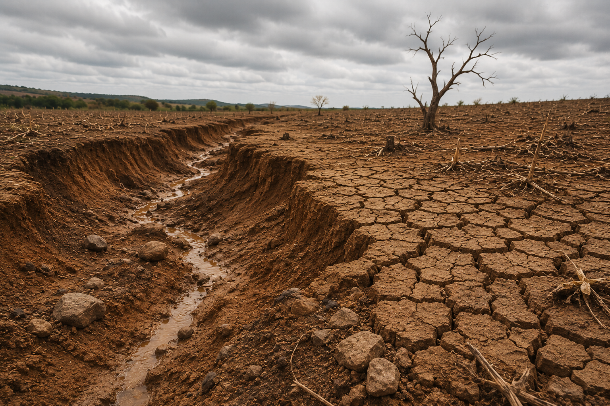
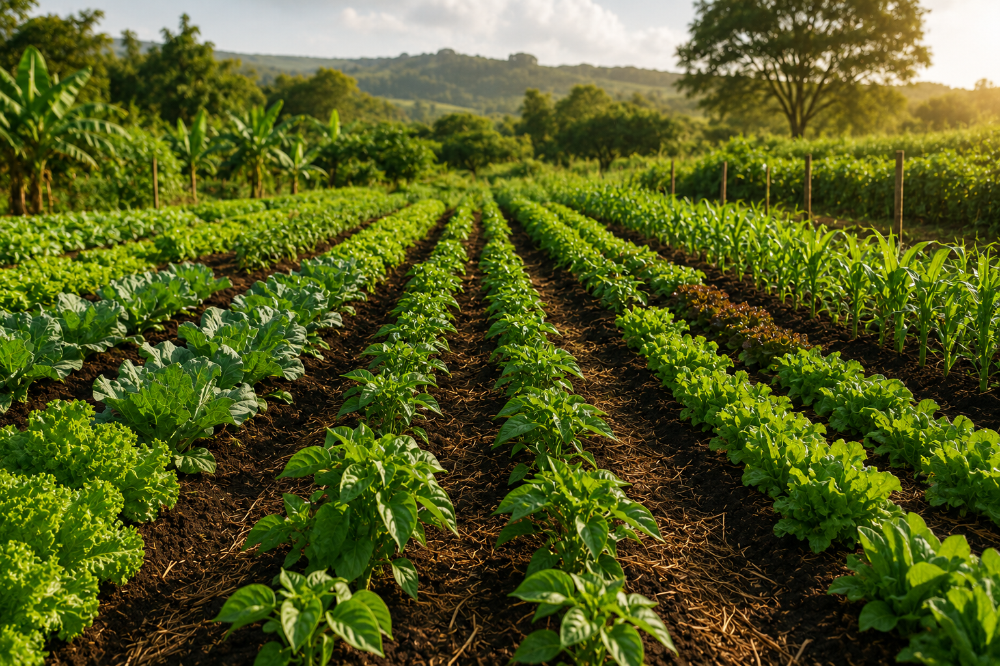
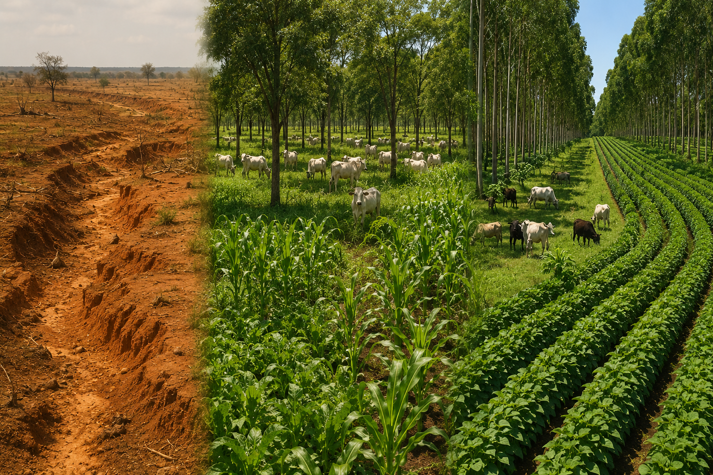
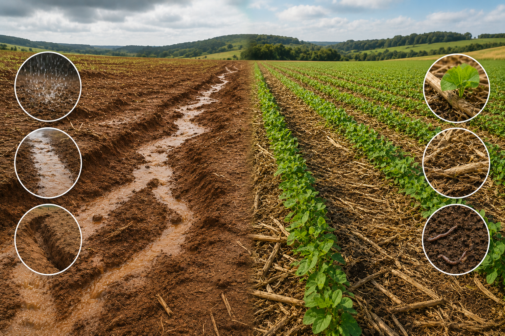

O Diagnóstico: Os Sintomas da Degradação
Compreender as ameaças ocultas e visíveis que destroem a camada fértil do planeta é o primeiro passo para a mudança.
Simulador de Manejo: Teste suas Habilidades de Fazendeiro Sustentável
Você foi nomeado gestor de uma propriedade agrícola de 500 hectares enfrentando perda severa de produtividade. Escolha suas ações e veja o impacto imediato na saúde do solo e nos seus lucros fictícios.
Cenário Atual: Sua fazenda sofre com chuvas intensas que lavam a terra (erosão). O que você faz?
O Panorama Global em Números
Dados empíricos que traduzem a urgência da conservação do solo no Brasil e no mundo.
Impactos da (Não) Conservação
A perda da saúde do solo gera ondas de choque que vão além do campo.
Desequilíbrio dos Ecossistemas
A erosão carrega sedimentos ricos em agrotóxicos para rios e lagos, causando assoreamento e morte de fauna aquática. Além disso, solos degradados perdem a capacidade de estocar carbono, acelerando o aquecimento global.
Prejuízos Bilionários e Inflação de Alimentos
Solos inférteis exigem maior aplicação de insumos químicos caros. A quebra crônica de safras eleva o preço dos alimentos nas cidades e diminui o PIB agrícola do país, impactando a balança comercial.
Êxodo Rural e Insegurança Alimentar
Famílias de pequenos agricultores perdem seu sustento quando a terra se torna estéril. Isso força migrações em massa para centros urbanos já saturados, destruindo identidades culturais ligadas à ancestralidade do cultivo.
Casos Reais de Sucesso
Exemplos práticos de propriedades e regiões que viraram o jogo aplicando a conservação.

O Milagre do Sistema ILPF no Cerrado
Integração Lavoura-Pecuária-Floresta recuperou áreas degradadas em Goiás, triplicando a produção de grãos e carne no mesmo espaço.

Revolução do Plantio Direto nos Campos do Sul
Agricultores do Paraná reduziram em até 90% as perdas por erosão hídrica ao cessar a aração tradicional e manter a cobertura orgânica.
Espaço Multimídia
Expanda sua visão com materiais audiovisuais e conteúdos complementares de especialistas.
Estratégias Práticas de Conservação
Tecnologias e manejos ancestrais retrabalhados pela ciência moderna para salvar nossa fundação produtiva.
Dúvidas Frequentes
No tradicional, o solo é revirado (arado), quebrando sua estrutura física e matando a biologia. No Plantio Direto, o solo nunca é revirado; as sementes entram direto sob os restos vegetais da safra anterior, mantendo a proteção da terra.
Alternando plantas (como soja e milho) com plantas de cobertura (como braquiária ou crotalária), quebram-se os ciclos de pragas e doenças, economizando muito em defensivos. Além disso, plantas diferentes buscam nutrientes em profundidades diferentes, otimizando o solo.